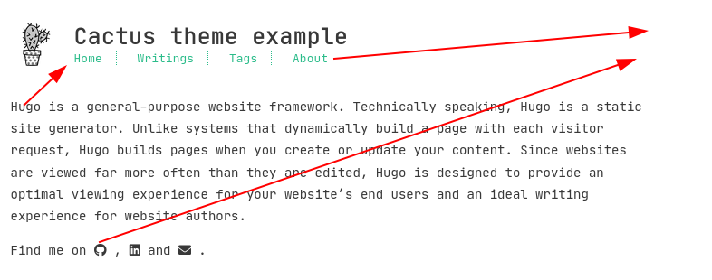
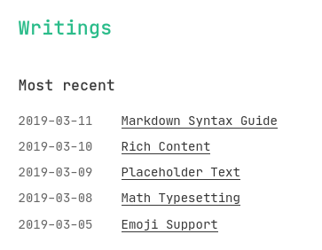

Blog facelift & technical renovation
My blog has been running on Jekyll since early 2015. I am very grateful for how easy and out-of-the-way it has made running my blog.
I haven’t touched (= updated/maintained) my Jekyll installation even once over that six years and it has just chugged on - letting me focus on content.
However, I’ve built other static sites with Hugo for years, and I knew I wanted to migrate my blog to it at some point. Now’s that day.
Facelift
Why
I liked the old theme for its simplicity, but I’ve come across many cleaner-looking and easier-to-navigate designs and I wanted to incorporate some of the ideas into mine.
A template is heavily dependent on the static website generator tool, so it made perfect sense to change both at the same time.
How did the old template look
Since you’re reading this with the new visuals, here’s how the old visuals looked like:
Template selection process
The facelift idea has been brewing for > 2 years. When I’ve seen something I like, I’ve written it down here, so when the time comes the ideas are all in the same place.
I was not expecting to find a near-100 % match from Hugo themes and was prepared to customize a lot, but the Cactus theme was near-perfect.
Tweaks I made
Location of some elements (website description, nav menu, social links) on the frontpage:

After:

Post index, before:

I wanted to visually sort them by year, and so the actual post dates now only have to contain month, day:

Those made the most impact. There were also some minor tweaks:
- The theme code assumed all page bundles having images are galleries - this is not the case for me.
- Changed most of absolute URLs to relative, so it works in testing mode without hacks
- Replaced theme’s Disqus integration with Hugo’s built-in (I have more confidence on its maintenance)
- Many more minor tweaks
Also of course I brought in the elements I had customized in my old blog, like the post footer having my signature and Twitter+newsletter plug.
Technical renovation
Even though I’m changing tools, I’ll keep using static website generation as a technique.
Why
I’ve had these pain points with Jekyll:
- Table of contents for long posts
- I’ve been ~manually handling these - generating these with a tool and fixing special cases like questionmark in heading where the tool’s anchor-representation didn’t match what Jekyll uses.
- Code syntax highlighting
- Jekyll (at least my version) didn’t suppport code fences.
I’m 100 % sure I could’ve gotten all of these by updating Jekyll and/or installing a plugin. However, I needed to either:
- major update for Jekyll: 2.5.3 -> 4.2.0, i.e. six years worth of changes, and Ruby software is notoriously prone to dependency hell when you’ve got Jekyll plugins etc. OR
- migrate to Hugo.
Both were large tasks anyway. I like Go (Hugo is written in it) and I get synergy benefits because my other static sites are built with Hugo.
Backwards compatibility
I wanted to preserve all important URLs, like:
- Existing post URLs, so inbound links continue to work
- RSS feed, so subscribers don’t need to re-subscribe
Migration for content was pretty easy: $ hugo import jekyll <oldJekyllBlogPath> <newHugoBlogPath>.
It translated front matter permalink keys from Jekyll to Hugo. I had already added explicit permalink
metadata to most of my posts, because I recently changed the URL generation scheme for new posts.
For RSS feed URL I had to add some config settings, because Hugo defaulted to index.xml when Jekyll had feed.xml.
Static website generators are awesome
Jekyll was my first dip into the world of static website generators. The concept means that you don’t have any code running on the path where people visit your website. It’s just static HTML like in the good old days, but you still get all the benefits of modern tools like HTML includes, variables and such.
It’s best explained by comparing the differences:
| Traditional model | Static website generator | |
|---|---|---|
| Manage & produce content | Log in to WordPress | Use your generator |
| Content management interface running at | Internet (your website) | Only your computer |
| Content management & consumption location | Same computer | Different computers |
| Blog content served by | WordPress | Any static HTTP server |
=> Content management & consumption are decoupled from each other. This is very powerful, as the actual website cannot have security issues when there’s no code running during content serving. This has enabled me to not update Jekyll in six years and still be fine. Can you imagine not updating WordPress in six years and not getting hacked?
It’s not ideal that I’m running an old Jekyll version with (probably) security issues, but honestly it’s fine because:
- Only software that runs on my computer can access my Jekyll instance
- My Jekyll instance is only running when I’m editing my blog content
I am 100 % sold on the idea of static website generators. If you don’t need content-serving-time-dynamic stuff, you should go this route. Even if you need, there are techniques where you can even overlay dynamic paths on top of your static website.
Owning your toolchain is also great because the less companies I have to interact with, the less privacy policy update emails I have to read, and the less I’ve to feel frustrated when inevitably they want to change something and force me to update my code. No masters.
How Docker helped
My Jekyll Docker image has worked for six years with zero maintenance (no software updates).
I’ve moved computers, many times. Can you imagine having much newer version of Ruby (Jekyll’s
programming language) compatible with old version of Jekyll, and still being able to $ apt install
old version of Jekyll and its plugins in a six-years newer OS and not facing any issues?
I couldn’t, either. In fact, I remember having dependency issues even installing Jekyll the first time.
The beauty with Docker is that you’ve to install something only once into the container image, and then it keeps on working pretty much forever if it doesn’t need much interaction with the outside world. Which static site generators don’t - files in -> files out (mathematically pure).
It still chugs on like a champ anywhere I need it: my own computer and the CI system. I’ve even changed the CI systems of my blog project (Travis -> GitHub), and regarding the blog building itself there were no changes necessary. Easily the most crappy, but time-saving Dockerfile I’ve ever built.

Thanks for reading! 😍
If you like my writing, consider following me on Twitter.
Stay updated on my blog posts & projects - sign up for
my newsletter. 🚀
No spam, unsubscribe any time.
RSS also available.